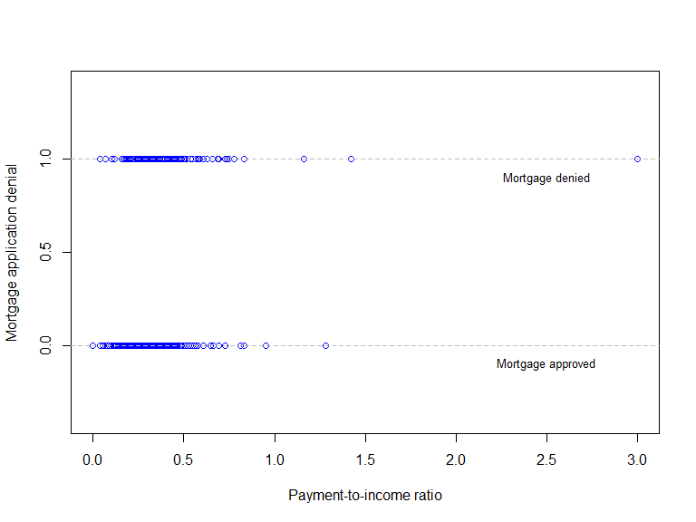
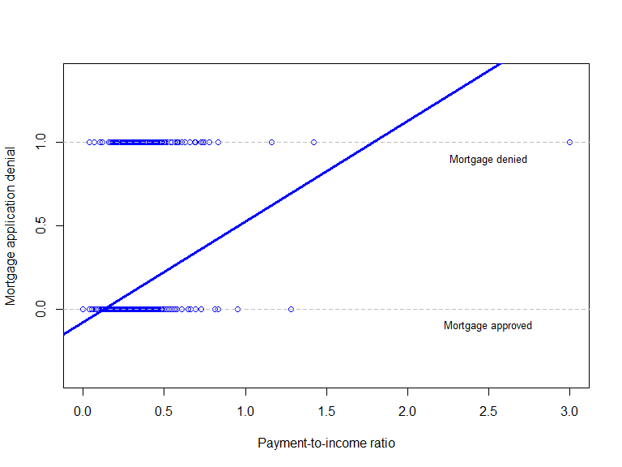
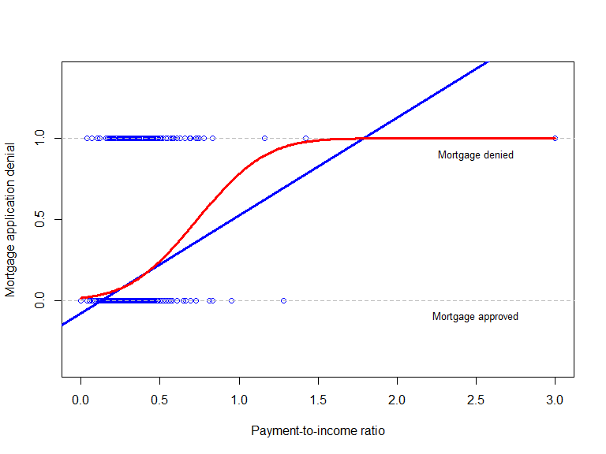
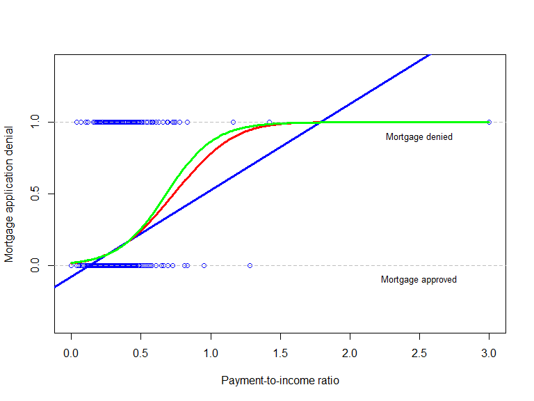

Regression with a binary dependent variable
Based on Stock and Watson, ch. 11
Jesper Bagger
EC3133 | Royal Holloway | 2020/21
Outline
Regression with a binary dependent variable
The Maximum Likelihood estimator
Estimation of probit and logit models in R
Predicted probabilities and effects
Measures of fit for probit and logit regressions
Regression with a binary dependent variable
Mortgage application denial and payment-to-income ratio

A probability model
Suppuse \(deny_i\) is a binary variable:
\[deny_i = \left\{ \begin{array}{ll} 1 & \text{ if application denied,} \\ 0 & \text{ if application approved,} \end{array} \right.\]
and let \(pirat_i\) be the payment-to-income ratio.
The expectation on \(deny_i\) is a probability
\[\mathrm{E}(deny_i|pirat_i) = \Pr(deny_i = 1|pirat_i)\]
Different regression functions gives rise to different models of \(\Pr(deny_i = 1|pirat_i)\)
The linear probability model
\[\Pr(deny_i = 1|pirat_i) = \beta_0 + \beta_1 pirat_i\]

The probit model
\[\Pr(deny_i = 1|pirat_i) = \Phi(\beta_0 + \beta_1 pirat_i)\]

The logit model
\[\Pr(deny_i = 1|pirat_i) = \Lambda(\beta_0 + \beta_1 pirat_i)\]

Nonlinear regression models
The probit and logit regression models are examples of nonlinear regression models
Effect on \(\Pr(deny_i = 1|pirat_i)\) from \(pirat_i\)-change by \(\Delta\):
\[\begin{multline*} \Pr(deny_i = 1|pirat_i + \Delta) - \Pr(deny_i = 1|pirat_i) \\ = \Phi(\beta_0 + \beta_1 [pirat_i + \Delta]) - \Phi(\beta_0 + \beta_1 pirat_i) \end{multline*}\]
OLS is no longer applicable; instead, rely on Nonlinear Least Squares or Maximum Likelihood estimation
The Maximum Likelihood estimator
The probit likelihood function
\[\Pr(deny_i = 1|pirat_i) = \Phi(\beta_0 + \beta_1 pirat_i)\]
What is the probability of obtaining the actual sample with \(n\) observations, \((deny_i,pirat_i;i=1,\ldots,n)\)?
\[\prod_{i=1}^n \Phi(\beta_0 + \beta_1 pirat_i)^{deny_i} \left[1-\Phi(\beta_0 + \beta_1 pirat_i)\right]^{1-deny_i}\]
Different values of \(\beta_0\) and \(\beta_1\) give different probabilities of obtaining the sample that was actually obtained
Call the probability of obtaining the actual sample as a function of \(\beta_0\) and \(\beta_1\) the likelihood function
Logit likelihood function obtains by replacing \(\Phi(\cdot)\) by \(\Lambda(\cdot)\)
The Maximum Likelihood estimators of \(\beta_0\) and \(\beta_1\)
The Maximum Likelihood estimators (MLEs) of \(\beta_0\) and \(\beta_1\), called \(\hat{\beta}_{0,ML}\) and \(\hat{\beta}_{1,ML}\), maximizes the likelihood function
Hence, \(\hat{\beta}_{0,ML}\) and \(\hat{\beta}_{1,ML}\) are the coefficient values “most likely” to have produced the sample!
Maximization of the (log-)likelihood function by sophisticated numerical optimization routines
The probit log-likelihood function
Statistical inference based on MLE
The MLEs of \(\beta_0\) and \(\beta_1\) are consistent and asymptotically normal if the probability model is correctly specified; in particular if it includes all relevant regressors,
Statistical inference proceeds as in the linear regression model where coefficients are estimated by OLS
\(t\)-tests
\(F\)-tests (or \(\chi^2\)-tests; the \(\chi^2\)-statistic is \(q F\))
Confidence intervals
Estimation of probit and logit models in R
Maximum Likelihood estimation of the probit model in R
# Probit regression
probit <- glm(deny ~ pirat,
family = binomial(link = "probit"),
data = HMDA)
summary(probit)##
## Call:
## glm(formula = deny ~ pirat, family = binomial(link = "probit"),
## data = HMDA)
##
## Deviance Residuals:
## Min 1Q Median 3Q Max
## -2.4140 -0.5281 -0.4750 -0.3900 2.8159
##
## Coefficients:
## Estimate Std. Error z value Pr(>|z|)
## (Intercept) -2.1941 0.1378 -15.927 < 2e-16 ***
## pirat 2.9679 0.3858 7.694 1.43e-14 ***
## ---
## Signif. codes: 0 '***' 0.001 '**' 0.01 '*' 0.05 '.' 0.1 ' ' 1
##
## (Dispersion parameter for binomial family taken to be 1)
##
## Null deviance: 1744.2 on 2379 degrees of freedom
## Residual deviance: 1663.6 on 2378 degrees of freedom
## AIC: 1667.6
##
## Number of Fisher Scoring iterations: 6Maximum Likelihood estimation of the logit model in R
# Probit regression
logit <- glm(deny ~ pirat,
family = binomial(link = "logit"),
data = HMDA)
summary(logit)##
## Call:
## glm(formula = deny ~ pirat, family = binomial(link = "logit"),
## data = HMDA)
##
## Deviance Residuals:
## Min 1Q Median 3Q Max
## -2.6583 -0.5255 -0.4705 -0.3864 2.7624
##
## Coefficients:
## Estimate Std. Error z value Pr(>|z|)
## (Intercept) -4.0284 0.2686 -14.999 < 2e-16 ***
## pirat 5.8845 0.7336 8.021 1.05e-15 ***
## ---
## Signif. codes: 0 '***' 0.001 '**' 0.01 '*' 0.05 '.' 0.1 ' ' 1
##
## (Dispersion parameter for binomial family taken to be 1)
##
## Null deviance: 1744.2 on 2379 degrees of freedom
## Residual deviance: 1660.2 on 2378 degrees of freedom
## AIC: 1664.2
##
## Number of Fisher Scoring iterations: 5Predicted probabilities and effects
Predicted probabilities and effects
\[\begin{multline*} \widehat{\Pr}(deny_i = 1|pirat_i + \Delta) - \widehat{\Pr}(deny_i = 1|pirat_i) \\ = \Phi(\hat{\beta}_0 + \hat{\beta}_1 [pirat_i + \Delta]) - \Phi(\hat{\beta}_0 + \hat{\beta}_1 pirat_i) \end{multline*}\]
Predicted probabilities and effects depend on \(pirat_i\)
Typically, report effects at sample mean of \(pirat\), or for range of values of \(pirat\)
Predicted probabilities and effects in R
# Compute predictions for P/I ratio = 0.3, 0.4
pred.prob <- predict(probit,
newdata = data.frame("pirat" = c(0.3, 0.4)),
type = "response")
# Compute difference in probabilities, print to console
print(diff(pred.prob))## 2
## 0.06081433Measures of fit for probit and logit models
Measures of fit for probit and logit regressions

Fraction correctly predicted
Prediction rule:
\[\tilde{deny}_i = \left\{ \begin{array}{ll} 1 & \text{ if } \Phi(\hat{\beta}_0 + \hat{\beta}_1 pirat_i) \geq 0.5 \\ 0 & \text{ if } \Phi(\hat{\beta}_0 + \hat{\beta}_1 pirat_i) < 0.5 \\ \end{array} \right.\]
Fraction correctly predicted is the fraction of \((deny_i,i=1,\ldots,n)\) where \(\tilde{deny}_i = deny_i\)
deny.pred <- (probit$fitted.values >= 0.5) # Predictions
mean((deny.pred = HMDA$deny)) # Fraction correct predicted## [1] 0.1197479Pseudo-\(R^2\)
The Pseudo-\(R^2\) measures the fit of the probit model using the likelihood function
Adding a regressor necessarily increases the value of the maximized likelihood \(\mathcal{L}^{\max}\): measure fit by comparing likelihood values with and without regressors
The Pseudo-\(R^2\) is
\[\text{Pseudo-}R^2 = 1 - \frac{\ln(\mathcal{L}^{\max}_{\text{w/ regressors}})}{\ln(\mathcal{L}^{\max}_{\text{w/o regressors}})}\]
Computing Pseudo-\(R^2\) in R
# compute the probit model w/o regressors
probit0 <- glm(formula = deny ~ 1,
family = binomial(link = "probit"),
data = HMDA)
# compute the pseudo-R2 using logLik() function
pseudoR2 <- 1 - logLik(probit)[1]/logLik(probit0)[1]
# Print pseudo-R2 to console
print(pseudoR2)## [1] 0.04620301Summary
Summary
Probit and logit regression are nonlinear regression models of the probability that a binary dependent variable is 1
Estimation by Maximum Likelihood: choose coefficient values that are “most likely” to have produced the sample used for estimation
Statistical inference based on estimated coefficients is standard
Measures of fit include fraction correctly predicted and the Pseudo-\(R^2\)